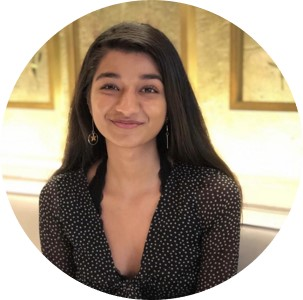
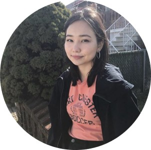
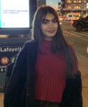
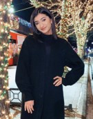

Hi everyone! I’m currently a junior in the Jenny Hunter Honors program and I’m pursuing a major in Neuroscience along with a minor in Public Health. From my experience in a research lab, I’ve found Journal Club discussions to really help fine tune critical thinking skills and that they give an individual the opportunity to grow knowledge in different fields beyond the research they’re a part of. We created this interactive platform for students to be able to enrich their scientific literature appraisal skills and to be able to present on research they’re interested in as well. We hope to make this club about you! Our mission is to cultivate everyone’s intellectual curiosity in research in a way that can help grow their future endeavors!

Hi everyone I’m currently a junior majoring in Biology and minoring in Cultural Anthropology through the Thomas Hunter Honors Program. In my free time, I enjoy running, knitting, and experimenting with coffee.. We started this club as a way to connect with other students who share interests in interdisciplinary research, and I am genuinely looking forward to working with students to present research that we can all learn from!

Hi all! I am a pre-PA junior majoring in Human Biology and minoring in Sociology. I’m also a Sage Honors scholar. My interests include reading, painting, and cooking! Like many of you, I lost my internship for the summer. The Pre-Health Journal Club is a way for all of us to have some fun and learn useful research skills while stuck at home.

Hi, I’m Mahnoor Memon. I’m a junior majoring in biochemistry with a sociology minor from the Thomas Hunter Honors Program. In my free time, I like to listen to music and paint. We wanted to start this club to help fellow students gain research exposure and to have a place for students to collaborate during this time. This is also a place where students can express and explore their interests.

Hi! I’m Zaina Syed and I am a junior majoring in biochemistry in the Roosevelt Scholar Honors Program. This club will be a great way for us to stay active and it’ll help sharpen our research literature skills. As many of us may have lost internships or research opportunities due to unfortunate circumstances, we hope this club gives us all something to be a part of. While also sharpening our research literature skills, we hope this club also allows students to figure out what they are most interested in. We hope to all learn from one another and have a great time!